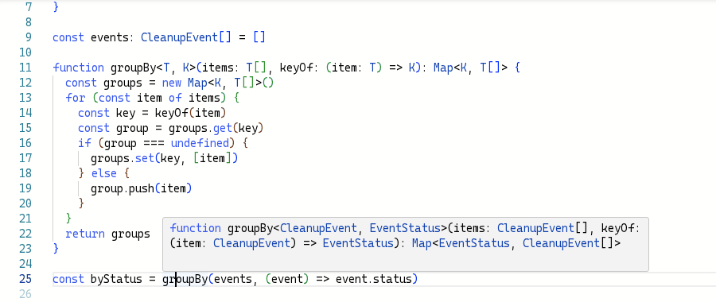
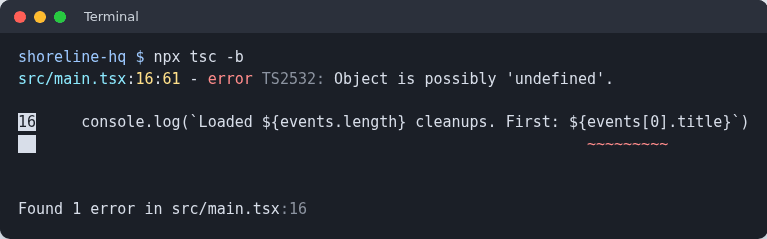

Session 3: Functions, Generics and Typing Real Data
How to teach Lessons 2.3 and 2.4: functions with contracts (parameters, return types, defaults, an options object), functions as values, generics and constraints, then types shared between files, type guards at the door, utility types, an honest items[0], a typed environment variable, and the HQ fetching real cleanups through a checked client; two labs, both projects started, every output real.
How to Use This Guide
- Same rhythm for both lessons: frame (one mental model) → live demo (you type, they follow) → guided lab (new practice, never the lesson's own project) → start the lesson's project. The rest of each project, the exercises, the quiz and the journal are homework.
- This session ends Module 2 and brings TypeScript back into the app: Lesson 2.3 stays in
ts-lab(functions.ts), Lesson 2.4 starts there (export, guards, utility types) and ends inshoreline-hqwith the API's real types, a typed setting and a checked client. Every learner must leave with the HQ at the end of Lesson 2.4: Session 4 builds the app's shell on it. The fallback islesson-06-endfrom the course downloads. - Type, do not paste (except the two long listings the lesson itself says to copy). Every output below comes from the lesson's own snippet, run in a copy of ts-lab or shoreline-hq exactly as the lesson leaves it, a learner's terminal, the API on a private port; where the lesson shows the same snippet the output is the lesson's, word for word.
- Keep
lesson_05.htmlandlesson_06.htmlopen. Labs live inlabs/module-03/;starter/folders andTASKS.mdare handouts,solution/folders are yours until the session is over. Neither lab needs the API: Lab 2.4 reads saved answers.
Lesson 2.4's project touches six files of the app (a copied types file, tsconfig.app.json, .env.example and .env.local, vite-env.d.ts, a 73-line client.ts, main.tsx), and the API must run. If the first half runs long, the room arrives at 2:15 with no time to finish, and Session 4 starts with half the machines in the wrong state. Protect the 2:15 start: cut from the 2.3 project start first (it lives in ts-lab, at home is fine). In the project, learners type vite-env.d.ts and the guard functions, and COPY the rest of client.ts from the lesson page while you read it aloud. Anyone not done by 2:50 unzips lesson-06-end at home (two terminals, npm ci, cp .env.example .env.local).
Before the Session
- ☐ Run the kit check once:
python3 labs/check_labs.py module-03from this kit's folder (9 runs, about 10 seconds; no API needed). - ☐ Projector machine: VS Code on
shoreline; three terminals ready ("ts-lab", "api" fornode server.ts, "hq" fornpm run dev); a browser with DevTools (Console) docked;lesson_05.htmlandlesson_06.htmlin tabs. Your own HQ at the END of Lesson 2.3 (lesson-05-end), so you build Lesson 2.4's project live. - ☐ USB stick:
lesson-06-end.zip(the finished Module 2: ts-lab and the HQ with its data layer) for anyone who falls behind. - ☐ Board, before learners arrive: the job card (Bring: … · Hand in: …) next to
function spotsLeft(capacity: number, taken: number): number; a sorting bin with a blank label holder next tofirst<T>(items: T[]): T | undefined; for 2.4, the sign-in table: "outside data → unknown → type guard → typed, or rejected". - ☐ Remind learners at the break: start the API in its own terminal; the second half needs it for the console check.
| Symptom | Cause | Fix |
|---|---|---|
error TS1484: 'CleanupEvent' is a type and must be imported using a type-only import… | A plain import of a type | import type { … } (verbatimModuleSyntax). |
error TS5097: An import path can only end with a '.ts' extension when 'allowImportingTsExtensions' is enabled | A value import between ts-lab files | ts-lab imports only types (import type); the HQ has the setting. |
VITE_API_URL is not set: copy .env.example to .env.local in the console | No .env.local, or it is in the wrong folder | cp .env.example .env.local in shoreline-hq; the dev server restarts by itself. |
TypeError: Failed to fetch / ERR_CONNECTION_REFUSED in the console | The API is not running (or another address) | Terminal "api": node server.ts; the address in .env.local without a slash at the end. |
Unexpected data from GET /api/events | The guard rejected the data: a typo in a property list, or an edited src/api/types.ts | Compare with the lesson's client.ts; re-copy types.ts from shoreline-api (never edit it). |
TS2532: Object is possibly 'undefined' on events[0].title | noUncheckedIndexedAccess is now on in the HQ | events[0]?.title ?? 'none', as the lesson's main.tsx does. |
TS17008/TS1382 on <T>(...) => in a .tsx file | TSX reads <T> as a tag | <T,> or a function declaration (Lesson 2.3 FAQ). |
Session 3 Agenda (3 hours)
| Clock | Minutes | Segment | What happens |
|---|---|---|---|
| 0:00 | 15 | Warm-up: Session 2 retrieval | Four questions on widening, ??, unknown and the discriminant; every ts-lab passes npm run check. |
| 0:15 | 10 | 2.3 Frame and mental model | The job card (a function's contract) and the labeled bin (a generic). |
| 0:25 | 20 | 2.3 Live demo | Parameters and return types, optional/default/rest, an options object, function types, generics, a constraint, TS2366. |
| 0:45 | 15 | 2.3 Guided lab | labs/module-03/l2_3-functions-and-generics/starter: Tasks 1 and 2 in pairs (an options object, a function type). |
| 1:00 | 20 | 2.3 Start the lesson project | functions.ts Steps 1 and 2: copied types and data, then spotsLeft, pluralize and eventLine. |
| 1:20 | 10 | Break | Start the API (node server.ts) in its terminal: the second half fetches real cleanups. |
| 1:30 | 10 | 2.4 Frame and mental model | One roster on the board (modules) and the sign-in table (type guards at the door). |
| 1:40 | 20 | 2.4 Live demo | import type, a type predicate, an object guard, utility types, noUncheckedIndexedAccess, VITE_API_URL. |
| 2:00 | 15 | 2.4 Guided lab | labs/module-03/l2_4-typing-real-data/starter: Tasks 1 and 2 in pairs (import type, guards for the impact totals). |
| 2:15 | 35 | 2.4 Start the lesson project | The HQ meets its data, Steps 1 to 5: the API's types, the stricter setting, .env.local, client.ts, real cleanups in the console. |
| 2:50 | 10 | Wrap-up | Exit ticket (3 questions), homework, bring list for Session 4 (Checkpoint 1). |
| Total | 180 | Ends at 3:00. |
In the room. The lesson pages estimate 150 + 155 = 305 minutes; the room has 145 after the warm-up, the break and the wrap-up: 65 for Lesson 2.3 and 80 for Lesson 2.4, whose project gets the longest block because the app must be in the right state for Session 4.
Goes home (about 2 to 3 hours). Lesson 2.3: project Steps 3 to 6 (function types and callbacks, the four generic helpers, break it four ways, Map.groupBy), Exercises 1 and 2, the quiz, the journal, delete scratch.ts. Lesson 2.4: whatever is left of the project (Step 5's breaks, Step 6's full check), Exercises 1 and 2, the quiz, the journal. Both labs' remaining tasks. And prepare for Checkpoint 1 in Session 4 (Module 2: Lessons 2.1 to 2.4): reread the four Key Takeaways lists.
Protect, in this order: the 2.4 project (every HQ logs its real cleanups); import type and the type predicate; generics with a constraint. Cut first: the 2.3 "path that returns nothing" step and the 2.4 utility-types step (one screen each in the lessons), then the 2.3 project start, then the 2.3 guided lab's second task.
Opening Segment
Warm-up: Session 2 Retrieval
15 min| 3m | Every machine: npm run check in ts-lab is silent with types.ts and shapes.ts (and no scratch.ts) |
| 9m | Four retrieval questions (workbook Warm-up), pairs, then the room |
| 3m | Today's map: functions and generics in ts-lab, then the API's data in the HQ; Checkpoint 1 next session |
const flats = { name: 'Sandpiper Flats', terrain: 'marsh' }passed where aSiteis expected gives TS2345 ending in "Type 'string' is not assignable to type 'Terrain'". Why, and the fix? Answer: The property was inferred asstring(a const object's properties can change); annotate where it is created:const flats: Site = ….spotsTaken || 'unknown'withspotsTaken = 0: what prints, and what should it be? Answer:unknown; use??, which falls back only on null and undefined.const meta = JSON.parse(text): what is its type, and what does the course write instead? Answer:any; the course writesconst meta: unknown = JSON.parse(text)and narrows it before use.- In
LoadState, which property tells the members apart, and what is it called? Answer:kind: the discriminant of a discriminated union.
- A ts-lab that does not check clean usually holds a forgotten
scratch.tsor an unfinished Step 4 break: fix it now, the first demo uses the folder. - Learners who skipped the homework can still follow 2.3 (it starts a new file); Lesson 2.4 needs
shapes.ts: they copy it fromlesson-04-end.
Lesson Plans
Functions and Generics
65 min- Annotate a function's parameters and return type, and decide when an explicit return type is worth writing
- Use optional, default and rest parameters and an options object, and read the errors for missing or misplaced arguments
- Describe a function as a value with a function type, such as (event: CleanupEvent) => string, and pass typed callbacks
- Write generic functions and types (first<T>, Page<T>) and let TypeScript infer the type arguments
- Constrain a type parameter with extends so a generic function can use the properties it needs
- Read overloaded and generic declarations in TypeScript's own library, such as querySelector and find
| 10m | Frame: the job card; annotate the edges, now for functions; the labeled bin |
| 20m | Live demo: contracts, optional/default/rest, options object, function types, generics, a constraint, TS2366 |
| 15m | Guided lab: l2_3-functions-and-generics/starter, Tasks 1 and 2 in pairs |
| 20m | Start the lesson project: functions.ts Steps 1 and 2 |
"On cleanup day each team gets a job card: Bring 2 buckets and a grabber each. Hand in: a bag count. A function's type is that card: the parameters are what the team must bring, the return type is what it promises to hand in, and TypeScript is the organizer at the table who checks both."
Then generics: "The crew's sorting bins have a blank label holder. Slide in Glass and it is the glass bin: everything that goes in is glass, everything that comes out is glass. A generic is that bin, and T is the blank label. TypeScript reads the label from what you put in first and holds you to it." Write: one function, any type, every check kept.
In scratch.ts in ts-lab (re-created for this lesson), replacing its contents each time. Outputs from a copy of ts-lab as Lesson 2.3 leaves it; every one equals the lesson's card.
- A function's contract (3m). The job card: what the team brings, what it hands in. Two bad calls:
function spotsLeft(capacity: number, taken: number): number { return capacity - taken } console.log(spotsLeft(18, 11)) console.log(spotsLeft(18)) console.log(spotsLeft(18, '11'))
> ts-lab@1.0.0 check > tsc --noEmit scratch.ts:6:13 - error TS2554: Expected 2 arguments, but got 1. 6 console.log(spotsLeft(18)) ~~~~~~~~~ scratch.ts:1:38 - An argument for 'taken' was not provided. 1 function spotsLeft(capacity: number, taken: number): number { ~~~~~~~~~~~~~ scratch.ts:7:27 - error TS2345: Argument of type 'string' is not assignable to parameter of type 'number'. 7 console.log(spotsLeft(18, '11')) ~~~~ Found 2 errors in the same file, starting at: scratch.ts:6TS2554 counts; TS2345 is 2.1's old friend.node scratch.tsprints7, NaN, 7: JavaScript fills the gap with undefined and turns '11' into a number. Unlike JavaScript, TypeScript counts. - Why write the return type (2m). The promise is written down, so the error lands on the line with the bug:
scratch.ts:6:3 - error TS2322: Type 'number' is not assignable to type 'string'. Found 1 error in scratch.ts:6
Without: stringTypeScript infersnumber | "Full"and the mistake shows up in some other file. The rule: return types on functions other code relies on.voidfor functions that only print or save. - Optional, default, rest (3m).
function eventLine(title: string, town?: string) { if (town === undefined) { return title } return `${title} (${town})` } function spotsText(left: number, unit = 'spots') { return `${left} ${unit} left` } function totalBags(...counts: number[]) { return counts.reduce((sum, count) => sum + count, 0) } console.log(eventLine('Weekend Cove Cleanup')) console.log(eventLine('Weekend Cove Cleanup', 'Port Marisol')) console.log(spotsText(4)) console.log(spotsText(1, 'spot')) console.log(totalBags(14, 9, 22))
Weekend Cove Cleanup Weekend Cove Cleanup (Port Marisol) 4 spots left 1 spot left 45
HoverspotsText:(left: number, unit?: string) => string. Then put the optional parameter first: TS1016. With many options, pass one object: - An options object (2m). The lesson's
LineOptionswith a misspelled option:scratch.ts:16:78 - error TS2561: Object literal may only specify known properties, but 'showTwon' does not exist in type 'LineOptions'. Did you mean to write 'showTown'? Found 1 error in scratch.ts:16
"Destructured with defaults,= {}so it can be left out: this is exactly what React props will look like in Lesson 3.2." - Functions as values (3m). A function type, a callback, then two that do not fit:
scratch.ts:27:31 - error TS2322: Type 'number' is not assignable to type 'string'. scratch.ts:28:20 - error TS2345: Argument of type '(title: string) => string' is not assignable to parameter of type 'EventFormatter'. Found 2 errors in the same file, starting at: scratch.ts:27
Contextual typing:(event) =>needs no annotation becauseEventFormattersays what comes in. A callback with fewer parameters fits; one that returns a number does not. - Generics: the labeled bin (4m).
firstAny(items: any[]): anylets.nmaethrough (printsundefined);first<T>(items: T[]): T | undefinedcatches it:scratch.ts:18:19 - error TS2339: Property 'nmae' does not exist on type 'Site'. Found 1 error in scratch.ts:18
T is read from the argument. ThenPage<T>(the generic type the HQ will use for pages of results) and a constraint: without it,item.idis TS2339 onT; withT extends { id: string }a list of numbers is refused at the call: - A constraint at work (1m).
scratch.ts:22:22 - error TS2345: Argument of type 'number[]' is not assignable to parameter of type '{ id: string; }[]'. Type 'number' is not assignable to type '{ id: string; }'. Found 1 error in scratch.ts:22extendsreads "has at least". - A path that returns nothing (2m). The lesson's
statusLabelwith two of four statuses and a: stringreturn type:scratch.ts:3:44 - error TS2366: Function lacks ending return statement and return type does not include 'undefined'. Found 1 error in scratch.ts:3
This answers Lesson 2.2's bonus question: a return type makes TypeScript insist that every status is handled.

- Reaching for
anyto make a function reusable. Coach: "What does the caller get back, and can the editor still help them?" Show.nmaepassing withanyand failing with<T>. - Using a property of
Twithout a constraint. TS2339 onT. Coach: "What must every T have for this line to work? Say so with extends." (Self-check Q5; Lab 2.3'sindexById.) - An optional parameter before a required one. TS1016. Coach: "With one argument, which one did you mean?" Move it, default it, or use an options object (Q2).
Folder: labs/module-03/l2_3-functions-and-generics/starter/ (task sheet labs/module-03/l2_3-functions-and-generics/TASKS.md); your reference is labs/module-03/l2_3-functions-and-generics/solution/. New practice with volunteer SHIFTS: an options object with defaults and a rest parameter (Task 1), a function type for formatters (Task 2), three generic helpers, one with a constraint (Task 3). Five @ts-expect-error lines in the test file make the type check fail until the types are precise (a misspelled option must be an error, a formatter returning a number must be an error, lastOf must admit undefined, numbers have no id). npm install once in starter/.
- Run it as shipped (2m):
npm testfails all five tests withTODO;npm run checkreports 19 errors (seven TS7006, the rest from the type tests). - Task 1 in pairs (8m):
interface HoursOptions { showRole?: boolean; unit?: string }, then{ showRole = false, unit = 'h' }: HoursOptions = {}and: string;...hours: number[]. Circulate for options typed inline without= {}(the one-argument call then fails). - Task 2 (4m):
type ShiftFormatter = (shift: Shift) => stringandreturn shifts.map(format). - Debrief (1m): "Which test line proves the options are typed?" (the
showRolline). The solution's runs end:
ℹ tests 5 ℹ pass 5 ℹ fail 0
- Fast finishers: Task 3 and the stretch (
groupBy<T, K>).
The lesson project is The Crew's Helper Functions, six steps in ts-lab/functions.ts. In the room: Step 1 (the file's comment, the COPIED types and the sample data: copy the data block from the page) and Step 2 (spotsLeft, pluralize with a default, eventLine with an options object). The Step 2 functions:
function spotsLeft(event: CleanupEvent): number { return Math.max(event.capacity - event.spotsTaken, 0) } function pluralize(count: number, word: string, plural = `${word}s`): string { return count === 1 ? `1 ${word}` : `${count} ${plural}` } interface LineOptions { showStatus?: boolean prefix?: string } function eventLine(
Done in the room = npm run check silent and node functions.ts prints its first six lines (the rest of the twenty come with Steps 3 and 4). Goes home: Steps 3 to 6. Learners who wonder why the types are copied: "Lesson 2.4 shares them, next block."

Ask these out loud:
- When does the course write a return type? Answer: on functions other code relies on (shared helpers, exported functions, the API client); small local ones infer.
- What does a default parameter look like from the caller's side? Answer: optional (
unit?: string). - Why does
(event) => event.titleneed no annotation insideprintAll(events, …)? Answer: contextual typing: the function type says what comes in. - What does
T extends { id: string }mean? Answer: T can be any type that has at least a stringid.
Workbook self-check, items Q1 to Q6.
Answers: Q1 C) 1 spot left / 4 spots left; Q2 A required parameter cannot follow an optional one (TS1016): with one argument, TypeScript could not tell which one you meant. Put the optional parameter last, give it a default, or use an options object; Q3 B) printAll(events, () => 'one more cleanup'); Q4 D) Map<EventStatus, CleanupEvent[]>; Q5 A) The constraint is doing its job: numbers have no id, so they cannot be searched by id; Q6 The check goes silent (the inferred return type becomes "Scheduled" | "Completed" | undefined), and statusLabel('draft') quietly returns undefined. Full set with explanations in the Answer Key.
Support: keep the job card on the board and have learners say each function's card aloud before typing it ("brings a cleanup, hands in a number"). For generics, write the same call twice with the type argument spelled out (first<string>(…)) and then without it.
Stretch: Lab 2.3 Task 3 and the stretch; the lesson's Exercise 3 (pluck<T, K extends keyof T>) and Going Further (sortBy<T> with toSorted).
Typing Real Data
80 min- Share types between files with export and import type, and explain what verbatimModuleSyntax asks of you
- Write type predicates (value is EventStatus) that turn unknown data into checked, typed data
- Build new types from existing ones with Pick, Omit, Partial and Record, and read them in the API's real types
- Read every line of the tsconfig files Vite created, and switch on noUncheckedIndexedAccess
- Configure and type an environment variable (VITE_API_URL) and explain why front-end variables are never secret
- Fetch cleanups from shoreline-api through a reusable, generic, checked client
| 10m | Frame: one roster on the board (modules); the sign-in table (guards at the door) |
| 20m | Live demo: import type, predicates, an object guard, utility types, noUncheckedIndexedAccess, environment variables |
| 15m | Guided lab: l2_4-typing-real-data/starter, Tasks 1 and 2 in pairs |
| 35m | Start the lesson project: the HQ meets its data, Steps 1 to 5 |
"On cleanup day the crew pins ONE roster to the board. Nobody keeps a private copy that goes stale. A type exported once and imported everywhere is that roster."
Then the door: "Volunteers stop at the sign-in table, where an organizer checks each name against the roster before handing out gloves. getJSON is the table, each type guard is a roster, and everything past the table can trust that whoever made it through was checked. One table, many rosters: that is why the guard is a parameter." Draw: outside data → unknown → guard → typed, or rejected.
First half in ts-lab (shapes.ts exported, functions.ts importing, scratch.ts for the rest), as the lesson does. Outputs from a copy of ts-lab after Lesson 2.4; every one equals the lesson's card.
- One definition, shared (4m).
exportevery type in shapes.ts,import typein functions.ts: same twenty lines. Then drop the wordtype:functions.ts:4:10 - error TS1484: 'CleanupEvent' is a type and must be imported using a type-only import when 'verbatimModuleSyntax' is enabled. functions.ts:4:24 - error TS1484: 'Volunteer' is a type and must be imported using a type-only import when 'verbatimModuleSyntax' is enabled. functions.ts:4:41 - error TS5097: An import path can only end with a '.ts' extension when 'allowImportingTsExtensions' is enabled. Found 3 errors in the same file, starting at: functions.ts:4 import { CleanupEvent, Volunteer } from './shapes.ts' ^^^^^^^^^^^^ SyntaxError: The requested module './shapes.ts' does not provide an export named 'CleanupEvent'Node stripped the types out of shapes.ts: at run time there is noCleanupEventto import. The check caught a crash before it happened. Puttypeback. - A boolean does not narrow (3m). The lesson's
isEventStatusreturningboolean:scratch.ts:11:25 - error TS18046: 'value' is of type 'unknown'. Found 1 error in scratch.ts:11
Change only the return type tovalue is EventStatus: the check is silent andfilter(isEventStatus)becomesEventStatus[]: - A type predicate (1m).
a status: SCHEDULED not a status: finished not a status: 42 [ 'draft', 'scheduled' ]
Hovervalueinside theif(the screenshot below). - Guarding an object (3m).
isRecord, then onetypeofper property, chained with&&. Theo's reply has no phone at all and is rejected:Hannah Becker: no phone on file Rejected: { "id": "v04", "name": "Theo Nakamura" } Rejected: [ "v05", "Amara Diallo" ]Then the stop sign: a predicate is a promise TypeScript cannot check. A guard that lies compiles. - Types from types (3m). Pick, Omit, Partial, Record on the crew's types; then three lines that break them:
scratch.ts:25:25 - error TS2353: Object literal may only specify known properties, and 'id' does not exist in type 'Contact'. scratch.ts:26:29 - error TS2322: Type 'string' is not assignable to type 'number'. scratch.ts:27:7 - error TS2741: Property 'cancelled' is missing in type '{ draft: number; scheduled: number; completed: number; }' but required in type 'StatusCounts'. Found 3 errors in the same file, starting at: scratch.ts:25A Record over a union insists on every key: Lesson 3.3's lookup table. - items[0] made honest (2m). Lesson 2.3's
first<T>returningT, withnoUncheckedIndexedAccessswitched on in ts-lab:scratch.ts:4:3 - error TS2322: Type 'T | undefined' is not assignable to type 'T'. 'T' could be instantiated with an arbitrary type which could be unrelated to 'T | undefined'. scratch.ts:7:13 - error TS2532: Object is possibly 'undefined'. Found 2 errors in the same file, starting at: scratch.ts:4
Loops are not affected. The HQ gets the same setting in today's project. - Environment variables (4m). On the board, the lesson's table:
.env.example(in Git, documentation),.env.local(your machine, not in Git). OnlyVITE_names reach the code, and their values are pasted into the build: nothing in the front end is secret. Then the typed variable, the file the project adds:shoreline-hq/src/vite-env.d.ts// Types for Vite's import.meta.env (Lesson 2.4) // Unknown VITE_ names become errors instead of any interface ViteTypeOptions { strictImportMetaEnv: unknown } // The variables this app reads from .env files interface ImportMetaEnv { /** Where shoreline-api runs, such as http://localhost:4000 */ readonly VITE_API_URL?: string }
Without theViteTypeOptionsline,import.meta.env.VITE_API_ULR(typo) would beanyand pass.

asinstead of a check.const person = data as Volunteercompiles and crashes later. Coach: "Who checked it?asis a claim, a guard is a check." (The lesson's Common Mistakes, run: silent check, then a TypeError.)- Editing the copied
src/api/types.ts. It is the API's contract: re-copy it when the API changes, never edit it. - A secret in a
VITE_variable. Coach: "Open the built JavaScript: is it there?" (Q12; the lesson's stop sign.)
Folder: labs/module-03/l2_4-typing-real-data/starter/ (task sheet labs/module-03/l2_4-typing-real-data/TASKS.md); your reference is labs/module-03/l2_4-typing-real-data/solution/. New practice on the crew's IMPACT TOTALS (the lesson's exercises guard sites; the project guards cleanups): fixtures/impact.json and meta.json are the real answers of GET /api/impact and GET /api/meta, and types.ts is the API's own ImpactTotals, copied. npm install once in starter/.
- Run it as shipped (2m):
npm testcannot even start:
> shoreline-ts-lab@1.0.0 test
> node --test --test-reporter=spec
import { DebrisCategory, ImpactTotals } from './types.ts'
^^^^^^^^^^^^^^
SyntaxError: The requested module './types.ts' does not provide an export named 'DebrisCategory'- Task 1 (2m):
npm run checkexplains it with TS1484 (once per name);import typeand the tests run: four fail withTODO. - Task 2 in pairs (10m): change only
isDebrisCategory's return type (the TS2322 inknownCategoriesdisappears), thenisImpactTotals:isRecord, every number, the dates as text or null, a count for every category (categories.every(...)), the two lists. Circulate for guards that check onlyeventsandbags: the broken-answer test catches a missingfoam. - Debrief (1m): "What did your guard promise, and what did it check?" The solution's runs end:
ℹ tests 5 ℹ pass 5 ℹ fail 0
- Fast finishers: Task 3 (Pick, Record, Partial;
addCountsreturns a copy) and the stretch (labelOfwithfind).
The lesson project is The HQ Meets Its Data, six steps in shoreline-hq. In the room, Steps 1 to 5 (35 minutes), with the API running:
- Step 1 (5m):
mkdir src/apiand copy the API'score/types.tstosrc/api/types.ts; compare one interface with the shapes.ts draft (the lesson's table). - Step 2 (8m):
"noUncheckedIndexedAccess": truein tsconfig.app.json;.env.examplewithVITE_API_URL=http://localhost:4000;cp .env.example .env.local;src/vite-env.d.ts(above). - Steps 3 and 4 (15m):
src/api/client.ts: the guards (type them: they are today's lesson), thenapiFetch,getJSONandgetEvents(copy, while you read them aloud). The heart of it:
/** GET a path and check the JSON with a type predicate before anyone uses it */ export async function getJSON<T>(path: string, isT: (value: unknown) => value is T): Promise<T> { const data = await apiFetch(path) if (!isT(data)) { throw new Error(`Unexpected data from GET /api${path}`) } return data } export function getEvents(): Promise<CleanupEvent[]> { return getJSON('/events', isCleanupEventList)
- Step 5 (7m): the temporary lines in
main.tsx,npm run dev, and the browser console:
Loaded 10 cleanups. First: Storm Debris Sweep
That line is the API's real page 1 (10 cleanups, the first titled Storm Debris Sweep), checked by the guards before the app saw it. Then stop the API and reload: the console shows the failed fetch. Goes home: Step 5's other breaks and Step 6's full check (npx tsc -b silent, npm run lint 0/0, npm run build):
> shoreline-hq@0.0.0 build > tsc -b && vite build vite v8.3.8 building client environment for production... ✓ 17 modules transformed. computing gzip size... dist/index.html 0.46 kB │ gzip: 0.30 kB dist/assets/index-DzE5JpJi.css 0.27 kB │ gzip: 0.18 kB dist/assets/index-DrgY2BC2.js 220.67 kB │ gzip: 69.09 kB ✓ built in …ms
Break 1 in Step 5 (events[0].title without ?.) is the stricter setting at work:
src/main.tsx:16:61 - error TS2532: Object is possibly 'undefined'. Found 1 error in src/main.tsx:16

Ask these out loud:
- What happens to an
import typeline when Node runs the file? Answer: it is removed with the other types; the imported file never runs. - What does
value is EventStatusadd to a function that returns a boolean? Answer: when it returns true, TypeScript treats the argument as an EventStatus. - Write the type of "a cleanup's changes: any property, all optional, never the id". Answer:
Partial<Omit<CleanupEvent, 'id'>>. - Where does a private API key go? Answer: on a server, never in a VITE_ variable: everything in the front end is public.
Workbook self-check, items Q7 to Q12.
Answers: Q7 A) npm run check reports TS1484 (and TS5097), and node functions.ts stops with does not provide an export named 'CleanupEvent'; Q8 [ 'GLOVES', 'BAGS' ], and yes, the check is silent; Q9 C) Compiles without a word, and treats every value that passes (even the text 'twelve') as a number; Q10 D) An error: property 'cancelled' is missing; Q11 B) for (const id of siteIds) { console.log(id.toUpperCase()) }; Q12 B) The check reports TS2339 (only VITE_API_URL is declared), and at run time the value is undefined: Vite passes only VITE_ names. Full set with explanations in the Answer Key.
Support: anyone behind at 2:30 stops typing and unzips lesson-06-end (npm ci in shoreline-hq and ts-lab, cp .env.example .env.local), then reads client.ts with the guide's three questions: what comes in, what is checked, what goes out. For guards, write the check for ONE property on the board first, then chain the rest.
Stretch: Lab 2.4 Task 3 and the stretch; the lesson's Exercise 3 (a guard that makes guards) and Going Further.
Closing
Sort the answers before Session 4: question 3 tells you who needs a minute on guards before Checkpoint 1.
- Write the type of a function that takes a cleanup and returns a line of text. Answer:
(event: CleanupEvent) => string. - Why does
findByIdsay<T extends { id: string }>and not just<T>? Answer: the body readsitem.id; the constraint guarantees every item has one and refuses lists that do not. - What does
getJSONdo with data that fails its type guard, and why? Answer: it throwsUnexpected data from GET /api…instead of returning it: outside data is unknown until checked, and nothing past the door may trust unchecked data.
- Finish both lesson projects. 2.3: Steps 3 to 6 (
node functions.tsprints twenty lines; the four breaks; Map.groupBy). 2.4: Step 5's breaks and Step 6 (npx tsc -b,npm run lint,npm run build); the console showsLoaded 10 cleanups. First: Storm Debris Sweep. - Lesson exercises. Exercises 1 and 2 of each lesson; Exercise 3 of each is a stretch. Delete
scratch.tsat the end. - Both Quick Quizzes on the lesson pages.
- Labs: Lab 2.3 Task 3 (and the stretch); Lab 2.4 Task 3 (and the stretch).
- Journal: both entries.
- Checkpoint 1 is in Session 4 (30 minutes, alone, Module 2: Lessons 2.1 to 2.4). Reread the four lessons' Key Takeaways and your Step 4 notes.
- The HQ at the end of Lesson 2.4:
src/api/types.ts,src/api/client.ts,.env.local, the console line on the dev server,npm run buildpassing. Not there? Unziplesson-06-end(thennpm ciandcp .env.example .env.local). - ts-lab with
types.ts,shapes.ts(exported),functions.ts(importing) and a silent check: the checkpoint uses the same rhythm. - Session 4 starts React (Lesson 3.1: components and TSX) and holds Checkpoint 1. No new installs.
If You Run Long or Short
- Protect: the 2.4 project start at 2:15; import type and the type predicate; generics with a constraint.
- Cut first (saves 5m): the 2.3 "path that returns nothing" step and the 2.4 utility-types step.
- Cut second (saves 20m): the 2.3 project start: learners start functions.ts at home from Step 1.
- Cut third (saves 8m): the guided labs' second tasks.
- Lesson 2.3's Step 6 together: swap
groupBy(forMap.groupBy(and read its declaration (F12): identical output. - The
ascommon mistake of Lesson 2.4, run: a silent check, then a crash. - Lesson 2.4's reading of tsconfig.app.json, line by line, with the lesson's table.